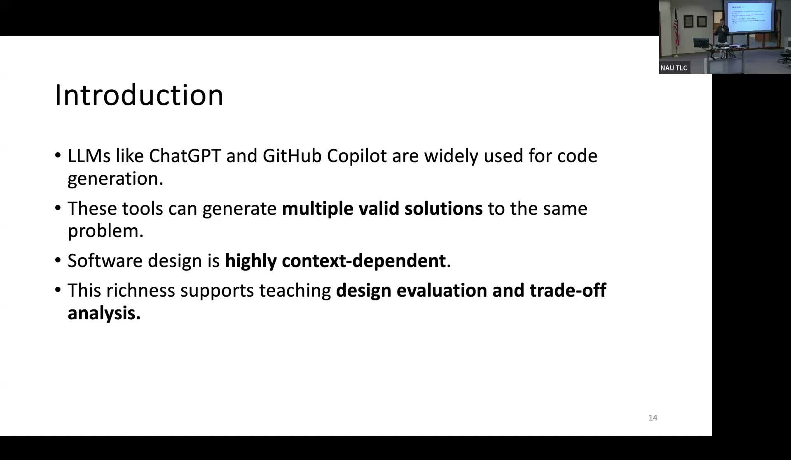
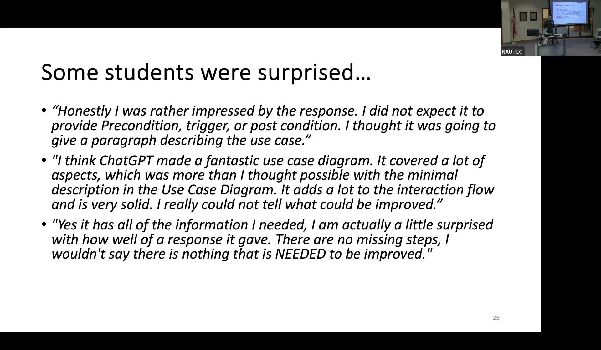

Using Multiple LLMs to Teach Software Engineering Trade-offs
Students generate, compare, and critique AI solutions from different LLMs to develop design judgment.
Presented by Marco A. Gerosa, Professor, School of Informatics, Computing, and Cyber Systems, Northern Arizona University
About This Project
A persistent challenge in software engineering education is teaching students that real-world design problems rarely have a single correct solution. Context determines which approach is best, and professional engineers must be able to evaluate multiple alternatives against competing constraints. LLMs like ChatGPT and GitHub Copilot can generate code and design artifacts rapidly, but when used in the conventional way, they produce one answer, which does not expose students to the plurality of valid approaches. Gerosa's project treated this limitation as a pedagogical opportunity.
Students were assigned to generate a software engineering artifact (such as use cases for a mobile banking app) using one LLM, critique the output against established quality criteria, then generate an alternative using a different LLM, and finally compare and contrast both outputs in a structured reflection. Approximately half of students produced balanced or mixed assessments of the AI outputs, showing engagement with trade-offs rather than uncritical acceptance. Nearly a third of students identified the recognition that multiple valid solutions can exist as their most significant learning from the exercise — a core insight in software engineering. Students also reported learning about prompting strategies, the capability differences between LLMs, and the trade-offs between detail and readability in design documentation. A number of students expressed genuine surprise at the quality of what the AI produced.
Project Highlights

